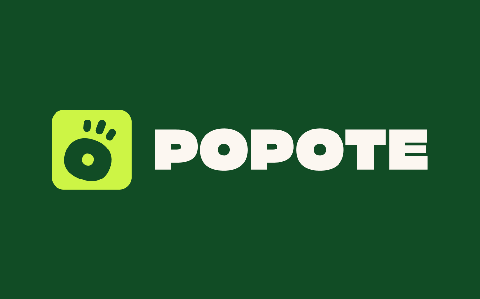
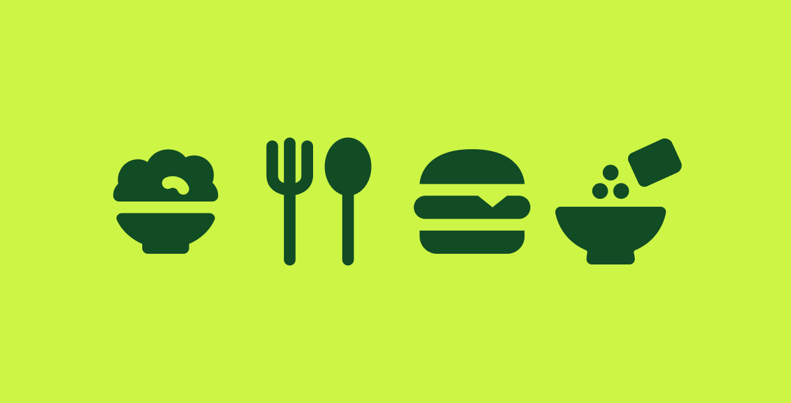
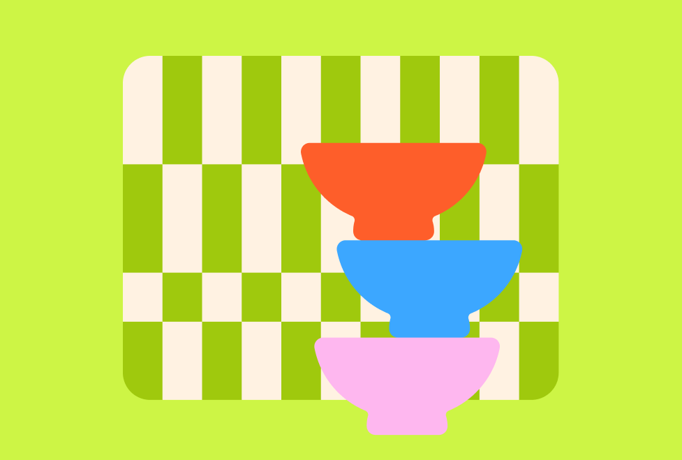

Contexte
Ce projet a été réalisé pendant mon année de formation, l'objectif était de créer une application mobile complète de A à Z. Je devais imaginer une solution utile pour répondre à un problème précis du quotidien des étudients. J'ai choisi de travailler sur l'alimentation, car c'est un sujet important, qu'es-ce qu'on mange ce soir ?.
Le but principal était de concevoir une application super simple et attractif. Il fallait imaginer une application qui donne envie de cuisiner, même avec un petit budget et peu de temps. J'ai dû travailler sur l'identité visuelle de la marque, mais aussi sur l'organisation des écrans pour que la navigation et un chemin utilisateur.
- Branding
- UI / UX
- Graphisme


La mission
Trouver le sujet de ce projet a été l'étape la plus difficile. Mais une fois l'idée validée, la création est devenue un vrai plaisir, malgré un délai très court d'une seule semaine pour tout faire. Pour le visuel, j'ai utilisé un motif à carreaux qui rappelle les nappes ou le carrelage de cuisine de nos grands-mères, mais revisité de façon moderne. Les couleurs sont fraîches et dynamiques pour représenter la variété des ingrédients et des plats.
L'application aide les étudiants à manger simplement grâce à un parcours bien pensé. Au départ, l'utilisateur crée un profil avec ses goûts, ses allergies et son budget pour trier automatiquement les recettes. Ensuite, la recherche de repas s'inspire du fonctionnement de Tinder : on balaye l'écran pour accepter ou refuser un plat. Pour les jours de flemme, un bouton permet aussi de choisir une recette complètement au hasard.
Pour l'organisation, les plats choisis vont directement dans un calendrier de la semaine, que l'on peut remplir soi-même ou générer automatiquement en un clic. Enfin, ce planning se transforme tout seul en une liste de courses interactive à cocher. Ce système propose même un lien direct vers des magasins Drive partenaires pour commander tous les ingrédients rapidement sans perdre de temps.
